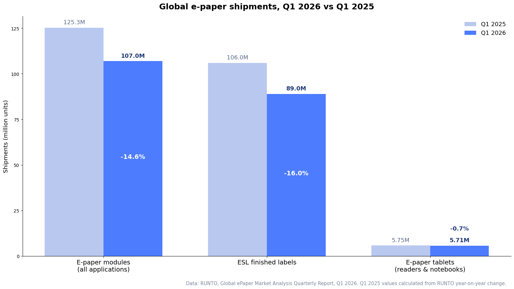

Walmart’s project is the single biggest event the electronic shelf label industry has ever absorbed: it reshaped which tag sizes dominate, which factories lead module production, and what the whole market’s “normal” looks like now that the surge is over. This article covers what Walmart deployed and why, the rollout timeline, the surge-pricing debate, and the full Q1 2026 shipment picture — useful context whether you follow the retail industry or are planning your own rollout. If you are new to the technology itself, start with what electronic shelf labels are.
What Are Walmart’s Digital Shelf Labels?
What hardware is Walmart actually installing?
Walmart’s digital shelf labels are battery-powered e-paper displays from France’s VusionGroup, fixed to the shelf edge, that update prices and product data wirelessly from Walmart’s central systems. According to RUNTO’s quarterly report, the rollout is built mainly on two compact sizes — 1.52-inch and 2.06-inch tags — chosen for dense grocery shelving where the label only needs to carry price, unit price and a barcode. In Q1 2026 those two sizes still accounted for 33.1% of all ESL modules shipped globally, even as the project wound down.
Functionally they are the same category of device we cover in our guide to types of electronic shelf labels: e-paper display, multi-year battery, wireless gateway, price-management software. What makes the Walmart deployment different is pure scale — hundreds of millions of labels across thousands of stores, ordered in one concentrated wave.
What do the labels do besides show a price?
Walmart has said the labels cut a store-wide price change from a two-day, aisle-walking task to a few minutes, keep the shelf price consistent with the register, and help associates prioritize restocking. The shelf edge effectively becomes a live output of the company’s pricing and inventory systems rather than a printed snapshot that ages the moment it is hung.
Source: Walmart Corporate News, June 6, 2024.
Walmart’s Digital Shelf Label Rollout Timeline
The rollout has run in three phases: pilot and announcement (2023–2024), concentrated hardware procurement (2024–early 2026), and store-by-store installation through the end of 2026.
| Date | Milestone | Source |
|---|---|---|
| 2023 | Walmart begins its global retail digitalization program, including ESL pilots. | RUNTO |
| June 2024 | Walmart announces digital shelf labels publicly, targeting 2,300 stores by 2026. | Walmart |
| December 2024 | Contract with VusionGroup extended to cover all US stores by end of 2026. | CNBC |
| February 2026 | Bulk label procurement essentially complete; project shifts to installation, data collection and tuning. | RUNTO |
| March 2026 | Roughly 2,300 stores live with digital labels. | CNBC |
| End of 2026 | Target: digital shelf labels in every US Walmart store (~4,600 locations). | CNBC |
Note the distinction between the two 2026 milestones: the purchasing wave ended in February, which is what shows up in shipment statistics, while the in-store installation continues through the year. That gap is exactly why the market data below looks the way it does.
Why Is Walmart Switching to Digital Price Tags?
The business case is labor, accuracy and speed — multiplied by Walmart’s scale. A typical supercenter carries over 120,000 SKUs, and paper tags mean every price change is a printed ticket someone walks to a shelf. Walmart’s own announcement described the change from a two-day price-change cycle to minutes. The label also becomes an operational surface: associates can be directed to shelves that need restocking, and the price shown on the shelf can no longer drift from the price charged at the register — the mismatch that drives both customer complaints and compliance risk.
These are the same mechanics that drive ESL adoption for every retailer; Walmart just proves them at maximum scale. Our ESL vs paper labels cost comparison works through the math for ordinary store counts, and our ESL cost guide breaks down what the hardware and software actually cost per store.
Will Walmart Use Digital Price Tags for Surge Pricing?
Walmart says no: the company states the labels are not designed for dynamic or surge pricing and that prices remain the same for every customer in every store. The concern — that a price which can change in seconds will change in seconds, rising with demand the way rideshare fares do — has followed the rollout since 2024. Several US lawmakers have proposed restricting or banning digital shelf labels outright, and some states have moved to regulate surveillance-based or demand-based pricing while the debate continues.
Two facts are worth separating. First, nothing about e-paper hardware requires dynamic pricing; the label displays whatever the retailer’s pricing policy produces, and most grocers use ESLs to change prices less chaotically, not more. Second, dynamic pricing done transparently — markdowns on expiring fresh food, for example — is one of the technology’s legitimate uses, and it is a policy choice, not a hardware inevitability. We examine both sides in our guide to AI dynamic pricing with ESL.
How Walmart’s Rollout Moved the Global E-Paper Market
What happened to e-paper shipments in Q1 2026?
With Walmart’s bulk orders fully released, global e-paper module shipments fell 14.6% year on year in Q1 2026 to 107 million units, and finished ESL shipments fell 16.0% to about 89 million units, according to RUNTO’s Global ePaper Market Analysis Quarterly Report. RUNTO notes the quarter was still far above any pre-2025 first quarter — the market has stepped down from an extraordinary peak, not collapsed. For context, RUNTO’s later full-year review counted about 560 million major e-paper terminals shipped in 2025, up 84.3% year on year.

Where did the Q1 2026 numbers land, category by category?
| Segment | Q1 2026 shipments | Change vs Q1 2025 | Note |
|---|---|---|---|
| E-paper modules (all uses) | 107 million units | −14.6% | ESL modules were 90.4% of the total, a falling share as other e-paper devices grow. |
| ESL finished labels | ~89 million units | −16.0% | Walmart order pulse ended; market returns to steady state. |
| Walmart’s tag sizes (1.52″ + 2.06″) | 33.1% of ESL modules | −7.8 pp vs 2025 | Size mix normalizing; 2.13″ (17.5%) and 2.66″ (15.1%) recovering share. |
| E-paper tablets (readers & notebooks) | 5.71 million units | −0.7% | Stable despite memory-chip cost inflation; e-notebook segment grew 74.3% YoY. |
Source: RUNTO, Global ePaper Market Analysis Quarterly Report, Q1 2026.
Who supplies the modules and the finished labels?
Upstream, the three module makers that carried the Walmart project — BOE, DKE and SEEKINK — remained the global top three in Q1 2026 with a combined 67.4% share, down 7.3 points from 2025 as the order wave receded. The notable new entrant is LCD panel maker HKC, which used ESL as its entry point into e-paper and reached 10.7% module share — fourth globally — in its first major quarter, per RUNTO.
Downstream, VusionGroup led finished-label shipments with a 36.7% share in Q1 2026, followed by China’s Hanshow at 31.0%. Hanshow’s recent acquisitions in AI algorithms and smart hardware signal where the whole industry is heading: from selling labels to selling AI-driven store operations — smart shelves, smart carts and service robots built around the same shelf-edge infrastructure. For how the vendor landscape compares beyond the top two, see our ESL manufacturer comparison.
What Comes After Walmart? The Next Wave
Is the ESL market done growing?
RUNTO describes the Q1 decline as a pause after a concentrated order cycle, not proof that ESL adoption has peaked. The researcher argues that the industry must now win a broader base of retail digitization projects. Public deployments support that view: VusionGroup’s Walmart contract extension covers the full 4,600-store US fleet, while its February 2026 agreement with Carrefour calls for all Carrefour hypermarkets and supermarkets in France to be digitized by 2030.
Because retail projects need six months to a year of preparation, RUNTO expects new orders to begin releasing in volume from the second half of 2026. In the meantime, the vendors that spent the Walmart era building software depth — not just shipping hardware — are best positioned for those higher-value projects.
What does this mean if you are not Walmart?
Three practical takeaways for mid-size retailers and warehouse operators:
- Hardware is proven at scale. Any doubt that e-paper labels survive real retail operations at volume has been settled by a 4,600-store deployment.
- Post-peak pricing favors buyers. With the mega-project over, module capacity is available and suppliers are competing for the next wave of orders — a good moment to run a pilot. Our cost guide shows what to budget.
- Plan for the AI layer, not just the label. The industry’s direction is shelf-edge data feeding pricing, inventory and compliance systems. Choose platforms that are open on integration — the approach we take across AiESL products and our supermarket solutions.
Sources
- RUNTO — Global ePaper Market Analysis Quarterly Report, Q1 2026 (module, ESL and tablet shipment data)
- CNBC — Walmart digital price labels coming to every US store by end of 2026
- Walmart Corporate News — Digital shelf labels announcement
- Newsweek — Walmart price tag change and the surge-pricing debate
- RUNTO — Global e-paper industry review, full-year 2025
- VusionGroup — Walmart US deployment extension
- VusionGroup — Carrefour France smart-store deployment